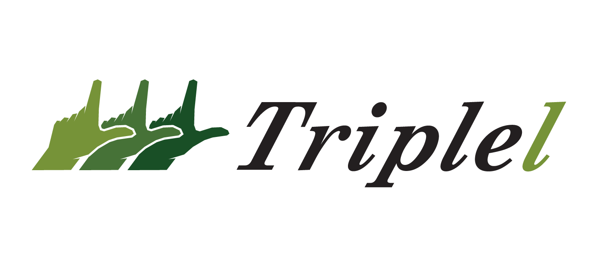

Triplel
Nonprofit

Programs Used
Adobe Illustrator
Adobe Photoshop
Category
Branding
Date Finished
Oct. 2024
Triplel is a ficticious branding project centered on the built around a clear commitment to environmental responsibility and community impact. The name “Triplel” itself reinforces the company’s three main focuses, landscaping, lawn care, and hands-on labor thus creating a memorable and structured foundation for the brand. The mian graphical element is the Triplel hand emphasizing the effort and care taken with every job that comes their way.
Alongside their efforts in environmental stability, Triplel aims to be a luxury focus on the lanscaping game. Whether applied to trucks, uniforms, or digital platforms, the identity maintains consistency while reinforcing a sense of purpose: hard work that not only shapes landscapes, but also serving local communities.